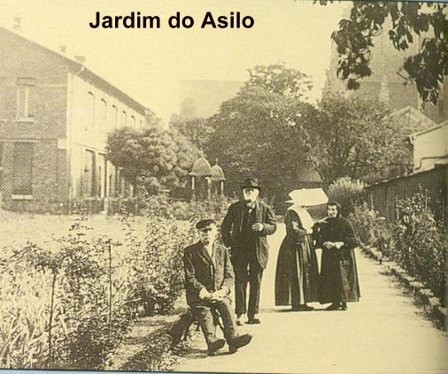
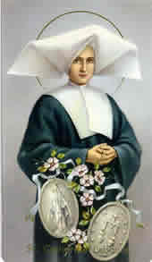
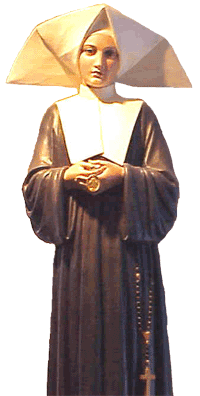
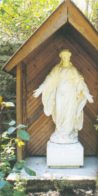
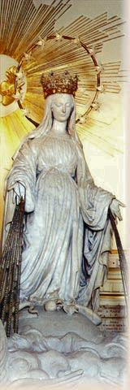
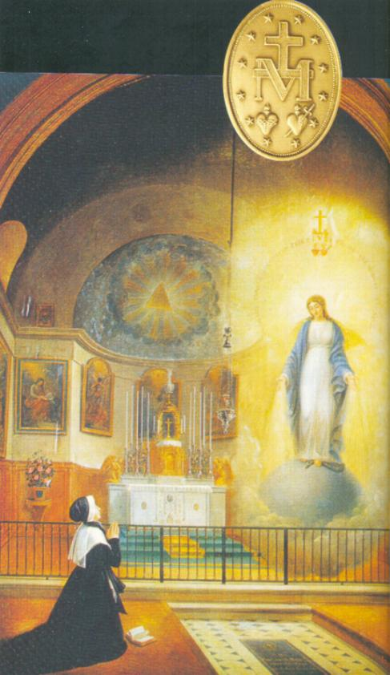

No dia 5 de Fevereiro de 1831, Catarina chegou
ao Asilo de Enghien, na Rua de Varennes, também em Paris. Este 
Irmã Catarina foi colocada na cozinha para ajudar a Irmã Vicência que preparava 60 refeições por dia, porque além dos 50 velhinhos, se acrescentavam o capelão, o cocheiro e sete Irmãs. A competência e agilidade adquirida no restaurante de seu irmão lhe foram muito úteis para desempenhar a missão com bastante eficiência. Todavia, bem depressa começou a sofrer com o “excesso de economia” praticado por sua companheira. Porque Catarina gostaria de mimar os velhinhos, preparando-lhes pratos mais deliciosos! Foram anos difíceis em que seu temperamento vivo e aberto, foi posto à prova.
Em 1832, uma epidemia de cólera assolou a cidade de Paris, durante longos meses, matando muita gente. No Asilo, Irmã Roland de 25 anos foi uma das vítimas.
Em face dos atuais acontecimentos, os quais tinham sido previstos por NOSSA SENHORA e revelados a Irmã, o Padre Aladel depois de muitas reflexões, começou a crer nas palavras de Catarina e decidiu atender ao seu pedido. Mandou o senhor Vachette, Joalheiro no Cais “des Orfèvres”, cunhar as Medalhas conforme a vontade de NOSSA SENHORA, e no mês de Julho, foi ao Asilo e entregou as Irmãs uma boa quantidade delas. Catarina recebeu-a em silêncio. As Filhas da Caridade com fé e muita alegria, espalharam as Medalhas para todos, porque sabiam que ela foi pedida pela MÃE DE DEUS. Mas as Irmãs e as pessoas não sabiam quem foi à mensageira que recebeu o pedido da VIRGEM! O povo de Paris à vista de tantas curas milagrosas e tantas conversões colocou nela o nome de “MEDALHA MILAGROSA”.

Nesta época, Irmã Catarina tornou-se responsável pela sala dos velhinhos. Os testemunhos das Irmãs que viveram com ela são unânimes: “Catarina amava-os a todos, sabendo ser firme e exigente, quando necessário”.
Irmã Josefina Combes que viveu 15 anos na companhia da Irmã Catarina, disse:
“Lembro-me de um dos velhinhos que durante as suas saídas abusava da bebida. Irmã Catarina dava-lhe as repreensões necessárias, mas sem cólera e sem nervosismo. Quando uma de nós a criticava por não o ter admoestado mais fortemente, respondia-nos: Não posso. Apesar de tudo, vejo nele NOSSO SENHOR. E tinha razão: quase sempre aquele homem chegava embriagado ao abrigo! No dia seguinte, Irmã Catarina dava-lhe a repreensão necessária e quando o velho lhe pedia desculpas, respondia-lhe: Não é a mim que deveis pedir perdão, mas ao nosso bom DEUS”.
Irmã Rosa Charvier que viveu 18 anos na companhia de Irmã Catarina, também falou sobre aquele respeito sincero que ela demonstrava por todos os carentes:
“Com seus velhos, ela
usava de uma sábia justiça e se por acaso tivesse alguma preferência por alguns deles,
sem 
Irmã Angélica Tanguy, que tinha chegado a Reuilly em 1863, também ficou vivamente impressionada com a dedicação sem limites de Irmã Catarina:
“Quando um de seus velhos entrava em agonia de morte, não o deixava nem de dia e nem à noite, rezava com fervor e providenciava para que recebesse os Sacramentos, preparando-o para o encontro definitivo com o CRIADOR”.
O cuidado com os velhinhos não impedia Irmã Catarina de também tomar conta da Fazendinha do Asilo. Vigiava as galinhas e os coelhos, ia juntar as vacas para que dessem um bom leite, tratava dos pombos, lembrando-se da casa paterna, realizando tudo com muita disponibilidade, atenção e um especial carinho. Com firme energia, defendia o pomar dos moleques do bairro sempre prontos a roubar alguma fruta ou verdura. Isto porque, ela estabeleceu a lei: as melhores frutas eram para os pensionistas do Asilo. Irmã Maria Tomás que ajudava Irmã Catarina a colhê-las, contou-nos:
“Pedi-lhe que me deixasse saborear algumas frutas. Ela me respondeu: Não, minha querida, estas frutas são para os velhinhos. Se sobrar alguma, eu lhe darei. Querem saber o que acontecia? Nunca sobrava uma sequer”.


